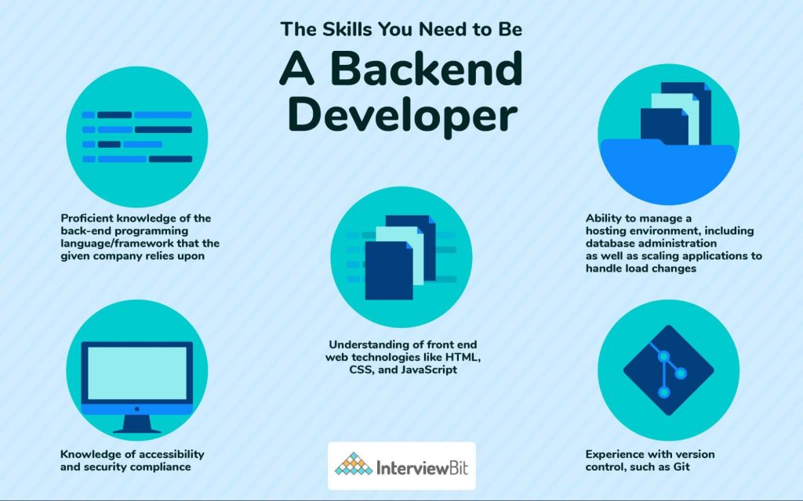

Learn Full Stack Web Development with Node.js with Ample Projects for Hands-on Practice. Gets hands-on training by building projects like E-commerce platforms, Messengers & more!
What a Front End Developer Does: An Overview. A front end developer has one general responsibility: to ensure that website visitors can easily interact with the page.
They do this through the combination of design, technology and programming to code a website's appearance, as well as taking care of debugging.

Back-end developers are the experts who build and maintain the mechanisms that process data and perform actions on websites. Unlike front-end developers, who control everything you can see on a website, back-end developers are involved in data storage, security, and other server-side functions that you cannot see.
A database management system (DBMS) is software to create and manage databases, allowing users to create, read, update and delete data in a database.